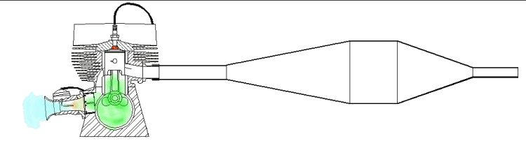
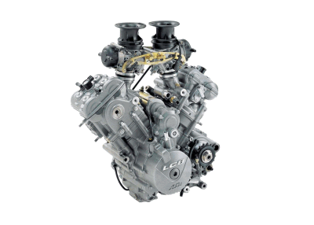
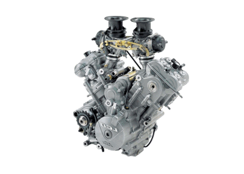

¶ Walter Kaaden, the chief engineer for MZ motorcycles in the 1950s, is generally considered the father of the modern two stroke expansion chamber. He reportedly said "You'll know when you have the design right, because the chamber will then be impossible to fit on the motorcycle without having it drag the ground, burn the rider's leg, or force the relocation of one or more major components."
Two strokes are all about the exhaust. When combustion occurs in a two stroke, the piston is pushed down by the expanding gases uncovering the exhaust port. The exhaust gas rushes out into the header pipe and a pressure wave is created. This wave can be either positive or negative in pressure. If it is a positive wave and hits a change in diameter in the tubing of the exhaust pipe it changes to a negative wave. Hit another change in diameter and the wave changes back to positive. This wave pressure can be as high as seven pounds per square inch (Both positive and negative waves) and travels at 1600 to 1700 feet per second.
If the pipe is made just right, a wave with negative pressure reaches the exhaust port just as it is fully open. This sucks the exhaust AND part of the new intake charge into the exhaust pipe. Then, just before the piston closes the exhaust port, this negative wave changes to a positive wave and pushes the fresh intake fuel charge BACK into the cylinder. All this happens in three to four thousands of a second. This sort of supercharges the engine, giving the high power out put of a two stroke engine. Without that properly designed exhaust pipe called an "Expansion Chamber", the two stroke engine will have no real power.
There is only one draw back to all this and that is that this supercharging only happens at the specific RPM that the pipe was designed for. Running the engine at any RPM above or below the designed RPM and the supercharging effect will be much less effective. That is why two strokes have such a narrow power band.

Above is a really nice Gif animation showing how it all works. I got this from a web site, made by Joseph A. Schuster in 1997. I have tried to e-mail him but there was no response. The site is no longer online. I am assuming he would want you to see this.
One problem with two stroke exhausts is that they can get plugged up with carbon from the oil used to lubricate the engine. The bike will start easily but just will not rev up. This is especially true of quite exhausts. If the exhaust has removable baffles or is fiberglass packed, you can easily clean them and replace the fiberglass packing. If the baffles are not removable it is much harder to clean them. Many stock two stroke exhausts have non removable baffles or have only one or two baffles that are removable. The different baffles collect the unburned carbon and plug up but you can't easily get to them. There are several cures. Non of which are easy or cheap.
- A new exhaust. This the most expensive and sure fire way to cure the problem.
- Burn the carbon out of the exhaust. This works quite well. The problem is that you need an oxy-acetylene torch set up and considerable skill in burning it out. You must heat the pipe hot enough to get the carbon burning but not so hot that you melt the steel of the pipe and internal pipe baffles. Once the carbon starts to burn you must make sure enough oxygen gets blown through the pipe to keep the carbon burning until it is all burned out. Sometimes you can actually see the progression of the burn, as a red hot band around the body of the muffler, as it moves from one end of the pipe to the other. If the carbon goes out it is quite hard to get it burning again. This is tricky but works well if you can do it. There is a big risk of melting the internal baffling. Melt a few baffles out and the pipe will run very loud. Do this outside. It produces smoke like a smoke bomb.
- Cut the exhaust pipe open on the back side and then burn out the carbon. Then weld the pipe back together. Again, do it outside.
- Use caustic soda to dissolve the carbon. Simply fill the pipe with a solution of caustic soda and water. The mixture should be about three pounds of caustic soda mixed with one gallon of water. This is not a real good option because the caustic soda is, well, caustic and dangerous to use. I DO NOT recommend this method.
- A mixture of soap that dissolves the carbon. There are several companies that sell special soap for this. I have tried some of their samples and I thought they just did not work. I filled up one plugged exhaust pipe with their soap mixture and left it for about 30 hours and nothing happened. Maybe I didn't give it enough time. At least it's harmless to use.


Back to M/C Repair Course 
Did this page help you? Would you like to help us? If so Click HERE
Copyright © 1999-2007 dansmc.com. All rights reserved.